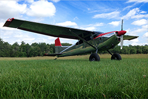

The Cessna Skywagon
The Cessna Skywagon was a name given to two different high wing tail dragger aircraft. The Cessna 180 was the first version of the Skywagon starting production in 1953. Later in 1961 the Cessna 185 was introduced as a heavy duty utility version of the Cessna 180. These aircraft are some of the most common airplanes that operate in the United States 49th state: Alaska.
Notible Skywagons
N185GM "Fireball"
{kind=link}
N185GM also known as "Fireball" to users of the supercub forum is a highly modified 1962 Cessna 185. With an impressive paint job and equipment, "Fireball" is an airplane that will not let you look away!
N8204V "Oh Cee Dee"
{kind=link}
N8204V nicknamed "Oh Cee Dee" by members of the Back Country Pilots group was inspired by "Fireball" when its owner visited the shop that built it. This turned into a build that encompased multiple years of work which made an aircraft of similar characteristic to "Fireball".
N9951X "Trusty Rusty" and "MyWagon"
N9951X nicknamed "Trusty Rusty" by myself is my ongoing project. The work that is going to go into "Trusty Rusty" is inspired by Fireball and "Oh Cee Dee" when it is completed, it should be of similar appearance and performance to both modified Skywagons.
Why the skywagon is so versitial
- Light Airframe With Loads of Power
The Skywagons all had an empty weight of about 1,700lbs and a gross weight of 3,200lbs.
With the 230 to 300 horse engine and wingtip mods the useful weight can be much higher than the empty weight. - Tailwheel Design
With the conventional tailwheel design, the skywagon can get into dirt and other sorts of unimproved strips.
Having the wheel in the tail instead of the nose protects the firewall from damage on hard landings.
Notible Model Changes Cessna 180
1953 Cessna 180
First year for production of Cessna skywagon type.
1957 Cessna 180
Fuel capacity increased to 65 galons.
1958 Cessna 180A
Ratchet mechanism added to trim screw to prevent undesired trim settings.
1965 Cessna 180H
Firewall is changed to make Cessna 180 and 185 airframes identical, center stack radios.
1974 Cessna 180J
Vertical fin attachment redesigned.
1981 Cessna 180K
Last year of production for 180 Skywagon
Notible Model Changes Cessna 185
1961 Cessna 185
First year for production of Cessna 185 type. A long dorsal fin from the vertical stabilizer was added for increased gross weight.
1962 Cessna 185
Redesign wingtips to include position lights, adds an adition of two inches to the wingspan.
1965 Cessna 185D
Control columns changed to improve instrument cluster and allow center stack radios.
1967 Cessna A185E
IO-520D Continental Engine standard options.
1973 Cessna A185F
Dual cowl mounted landing and taxi light. Another redesign of instrument panel.
1977 Cessna A185F
Redesign of main gear and tailwheel and gear springs.
1985 Cessna A185F
Last year of production for 185 Skywagon